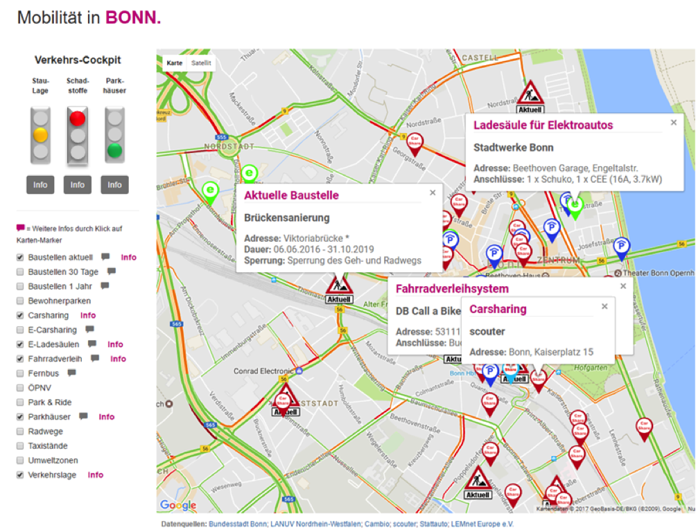
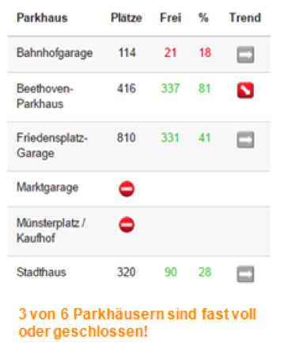

Die Verkehrssituation in deutschen Großstädten ist kritisch. Immer wieder werden international anerkannte Grenzwerte für gesundheitsschädliche Feinstaub-Emissionen überschritten. Auch von einer Reduzierung verkehrsbedingter Treibhausgase um die von der Staatengemeinschaft beschlossenen 30% sind wir noch weit entfernt. Der motorisierte Individualverkehr kann daher in der bestehenden Form nicht in die Zukunft fortgeschrieben werden.
Insbesondere Kommunen sind hier gefragt, über ihre Verkehrskonzepte zu informieren, sie in Frage zu stellen und den Bürgerinnen nachhaltige Alternativen anzubieten.
{% endblock %} {% block solution %}Kommunen können vorhandene Datensätze nutzen, um

Das Projekt „OpenData trifft Nachhaltige Mobilität!” in Bonn setzt genau dort an und bietet auf seinem Portal Informationen und Hilfe in folgenden Bereichen:
Im Mittelpunkt steht das Verkehrs-Cockpit. Anhand geeigneter Daten können Bürgerinnen über die aktuelle Verkehrs- und Umweltbelastung informiert und beim Überschreiten von Grenzwerten zum Umstieg auf öffentliche Verkehrsmittel aufgefordert werden.
Angebote und Umfang alternativer Verkehrsmittel müssen oft mühsam recherchiert werden. Viele Bürger sind nur unzureichend darüber informiert, dass es vielfältige Möglichkeiten gibt, auf öffentliche oder andere nachhaltige Mobilitätsangebote umzusteigen.
Deshalb werden alle Angebote übersichtlich auf einer Seite zusammengefasst und mit weiteren Hintergrundinformationen zu den einzelnen Anbietern versehen.
{% endblock %} {% block datasets %}Die vom Open Data Portal der Stadt Bonn bereitgestellten Daten beinhalten u.a.:
Die Bürgerinnen: Wenn Autofahrer in kritischen Stauzeiten auf nachhaltige Verkehrsmittel umsteigen, verbessert sich die Lebensqualität in ihrer Stadt für alle erheblich.
Die Kommune: Dieses OpenData-Konzept lässt sich mit überschaubarem Aufwand für jede Stadt realisieren.
{% endblock %} {% block outcome %}Johannes ist gerade als alleinerziehender Vater mit seinen zwei Kindern aus dem Umland in die Bonner Innenstadt gezogen. Täglich müssen die Familienmitglieder innerhalb der Stadt von A nach B kommen – mal über kürzere, mal längere Distanzen, viel Zeit bleibt dabei wortwörtlich auf der Strecke. Die zwei Kleinen müssen jeden Tag in den Kindergarten und zur Grundschule gebracht werden, nachmittags zu diversen Sport- und Freizeitaktivitäten, Johannes selbst muss zu seiner Arbeitsstelle in der Bonner Verwaltung und nach Feierabend wieder nach Hause fahren. Hinzu kommen Einkäufe, Arztbesuche und anderen Verpflichtungen, die in unregelmäßigen Abständen anstehen.
 Das Auto, das für Johannes auf dem Land unentbehrlich war, wird in der Stadt dabei immer mehr zur Belastung. Unvorhergesehene Baustellen, Staus oder die zeitintensive Parkplatzsuche führen dazu, dass selbst kurze Strecken vor allem eins bedeuten: im Auto sitzen und warten. Die Vorteile, die das Auto hat, z.B. dass sämtliche Kinder-Utensilien einfach schnell in den Kofferraum geworfen werden können, wiegen dabei häufig die Nachteile nicht auf. Schon oft hat Johannes sich gedacht, wie hilfreich es wäre, wenn er seine Fahrten in weiser Voraussicht besser planen und gegebenenfalls auf andere Verkehrsmittel umsteigen könnte. Schließlich war einer der Gründe für den Umzug die bessere Mobilität in der Stadt gewesen. Im Alltagsstress entscheidet aber letztendlich eben doch meist die Macht der Gewohnheit und die fehlende Zeit für eine Recherche bezüglich Alternativen, so dass die Familie am Ende häufig doch wieder das Auto nimmt.
Dabei plagt Johannes mit jeder Autofahrt ein zunehmend schlechtes Gewissen. Die Nachrichten über zunehmende Feinstaub- und Stickoxid-Belastung in fast allen deutschen Großstädten nehmen zu. Die anzunehmende Luftverschmutzung, der die Menschen in den Städten ausgesetzt sind, betreffen auch Johannes’ Familie. Zuvor hatten sie stets die frische Landluft als Selbstverständlichkeit genossen. Natürlich würde er es gerne vermeiden, seine Kinder nun durch den Umzug in die Stadt gesundheitlichen Risiken auszusetzen. Mit dem eigenen Auto dabei ständig in der Stadt unterwegs zu sein und darauf zu warten, dass sich die Luftverschmutzung dennoch auf gleichsam magische Art reduziert, ist sicher nicht die richtige Herangehensweise. Gibt es eine einfache, alltagstaugliche Lösung für Johannes‘ Familie?
Bei der Arbeit unterhält sich Johannes mit einem Kollegen über die kritische Situation auf Bonns Straßen. Der Kollege, der selbst regelmäßig aus Überzeugung und zur Schonung seiner Nerven mit dem Rad zur Arbeit fährt, empfiehlt ihm das Portal „OpenData trifft Nachhaltige Mobilität!“. Dort könne er nicht nur Informationen zur Verkehrssituation in Echtzeit abrufen und die Belastungswerte durch Schadstoffe nachverfolgen. Gleichzeitig würden ihm eine Zusammenfassung alternativer Verkehrsmittel und Informationen zu deren Anbietern übersichtlich und gesammelt an einem Ort zur Verfügung gestellt. Ein Blick auf die drei Ampeln des Portals (zur Stau-Lage, Parkhaus-Situation und Schadstoffbelastung) geben Johannes seither regelmäßig den entscheidenden Hinweis, wann es ratsam ist, das Auto stehen zu lassen - Anregungen zum Umstieg auf Alternativen liefert das Portal ohnehin stets automatisch mit, auch wenn das Auto mal wieder besonders bequem erscheint. Mithilfe des Portals kann Johannes außerdem direkt mit wenigen Klicks herausfinden, welche Möglichkeiten er hat, mit seinen Kindern und dem aufblasbaren Wasserkrokodil zum nächsten Freibad zu kommen.
Weniger verschwendete Zeit hinter dem Steuer, weniger Gequengel auf den Rücksitzen, kein schlechtes Gewissen mehr, mit jeder Autofahrt zur Verschlechterung der Luftwerte beizutragen, dafür mehr Regenerationszeit für die väterlichen Nerven und eine höhere Lebensqualität für die sämtliche Stadtbewohner – das alles ist möglich durch eine effektive Daten-Nutzung des Portals „OpenData trifft Nachhaltige Mobilität!“.
{% endblock %} {% block sources %}{% endblock %}